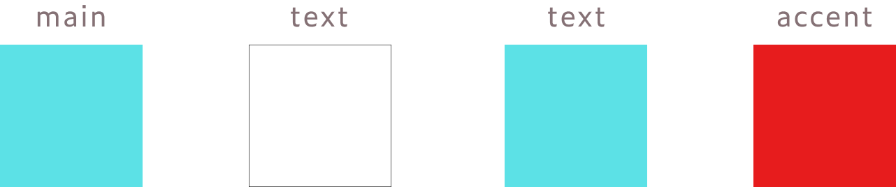

有給長期インターンシップ紹介サービス「N-aiku」様
ポスター広告制作
概要 Overview
有給長期インターンシップ紹介サービス「N-aiku」様のポスター広告制作（コンペ最優秀賞・採用）
- コンペティション名：#デザイナーは応募できないデザインコンペ
- 制作期間：5日間（2020年11月）
- 担当箇所：デザイン
- 使用ツール：Illustrator
- 制作過程note：https://note.com/mxxi22/n/n164655ce8cd2
- 掲載場所：名古屋市営地下鉄鶴舞線「鶴舞駅」コンコース壁面 (愛知県名古屋市中区千代田5丁目23-24)
制作プロセス Proccess
クライアント調査・情報整理
参考デザインピックアップ
- 今回は、以下の3つに絞って検索し、10個ほど参考デザインを集めました。
- ・転職や就職などのリクルート系
・塾や大学などの学校系
・駅広告 - ◼️参考にするポイント
- ・テキストがメインの場合の見せ方、レイアウト
・リクルート系のサービス感をどのように出しているか
・駅に掲載される場合のデザインの見え方
キャッチコピー考案
デザインの希望イメージとして「直感的なビジュアル情報とコピーを魅せること」という要望があったため、キャッチコピーを考えていきます。 まずは5W1Hを使って、ターゲットの状況を理解します。
- 今回は、以下の3つに絞って検索し、10個ほど参考デザインを集めました。
- Who（だれが）：大学1~3年生が
- When（いつ）：就活の前に
- Where（どこで）：家や大学、通学中やバイトに向かう電車内で
- What（なにを）：インターン先を
- Why（なぜ）：業界や職種理解を深めたり、就職先を決めるために
- How（どのように）：ネットで調べて応募を検討する
「ターゲットはどんな感情で何を考えてるか？」を思い返しながら、メインコピーとサブコピーをそれぞれ考えていきます。 「一番伝えたいことを明確に」を意識しました。
デザイン作成
配色
フォント
ヒラギノ角ゴ Std W8
あいうえお ABCDE
制作物 Works
A案
インパクトのあるキャッチコピーをメインに、シンプルでありながらも目を引く、洗練されたデザインを目指しました。 有給・長期インターンの紹介サービスで、サポートもしっかり充実しているため、本気でインターンに取り組んでみたい人に刺さることを意識して制作しました。
B案（最優秀賞受賞）

「愛知県のインターンシップを探せる」というN-aikuさんの特徴を前面に出して、目に飛び込んでくるようなデザインを意識しています。 「愛知」に「ここ」とふりがなを振ることで、愛知の学生さんに親近感を持ってもらえたらという想いを込めて制作しました。
C案
N-aikuさんは愛知企業のインターンに特化しているため、「愛知」というワードを大切にしました。 まっすぐに前を向く人の写真を使うことで、見る人のやる気を促し、本気でインターンに取り組んでみたい人に刺さるように制作しました。